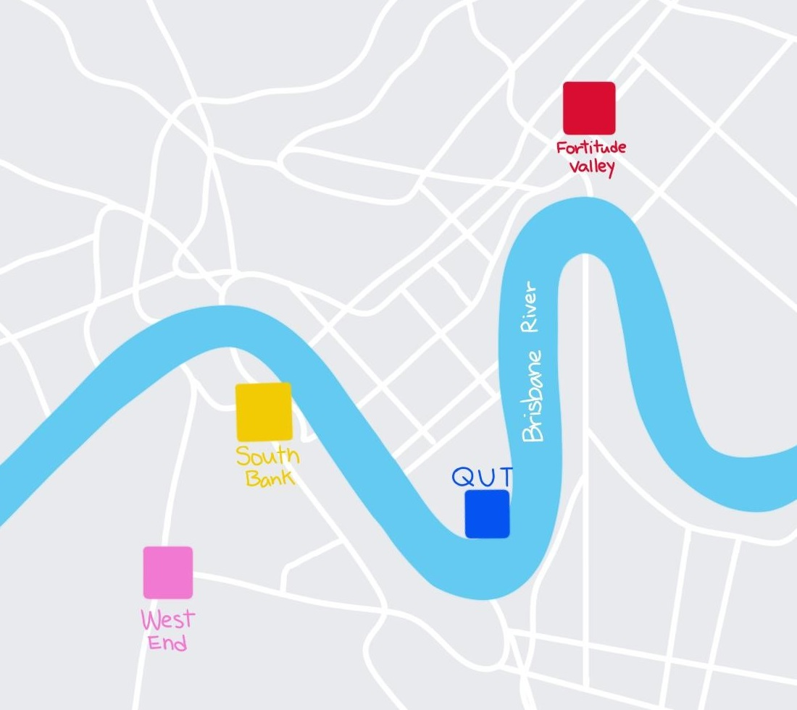

EXPLORE BRISBANE WITH CREATIVE CURIOSITY
South Bank
South Bank is Brisbane’s top cultural and entertainment area. It is right across the bridge from the city with plenty of ways to get there. You can discover art galleries and street art easily at South Bank.
Queensland University of Technology
Queensland University of Technology (QUT) have two campuses, one at Gardens Point in the city and another at Kelvin Grove. It is located right next to the Parliament House and the Botanical Gardens. QUT has an Art Museum located at Gardens Point.
Montague Rd & Mervale St, West End
West End is an inner-city suburb filled with rich history and culture. The Creative Hub will focus street arts on the corner of Montague Rd and Mervale St.
Wickham St, Fortitude Valley
Fortitude Valley is also an inner-city suburb. Many street corners around Fortitude Valley are covered by street art which change the whole atmosphere of the suburb. The street art were created by artists around the world. The Creative Hub will focus street arts on Wickham St.